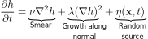
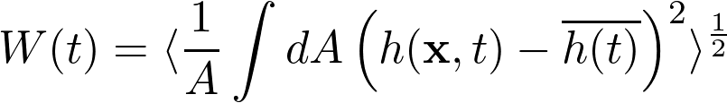
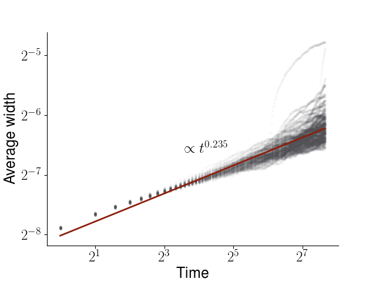

Kardar-Parisi-Zhang Equation

The Kardar-Parisi-Zhang (KPZ) equation describes the evolution of a height field h. The rate of change of the height of a surface consists of three terms. First, a surface tension term that tries to create a flat surface. Secondly, that makes the surface grow along the local normal vector. Finally, there is a random source term. Here, white gaussian noise is used.
The time evolution of the average width W defined via
where h(t) denotes the average height. The angular brackets denotes averaging over several runs.
Based on this small simulation, we find that the average with grows as W(t)∝t0.235. The value of the exponent is very close 0.2415 ± 0.0015, which is found by state-of-the-art methods [1].